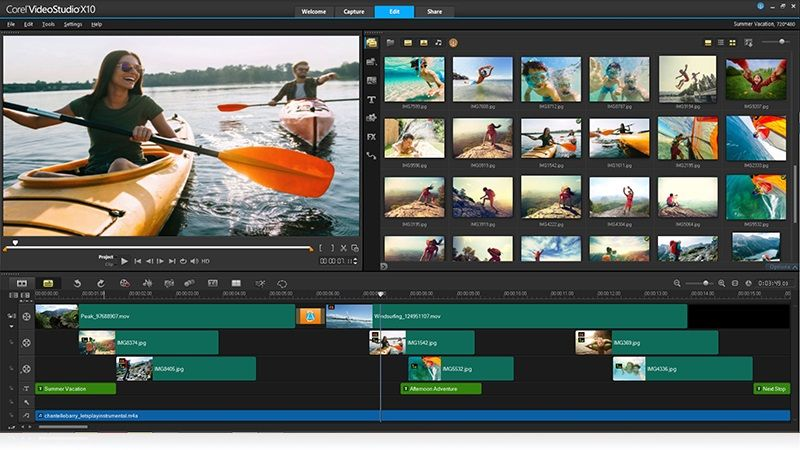

 Global Nav Open Menu Global Nav Close Menu Apple Shopping Bag + Search Support Cancel Apple Mac iPad iPhone Watch TV Music Support Shopping Bag + Cancel Photo Booth User Guide Open Menu Close Menu Communities Contact Support macOS Big Sur 11.0 macOS Catalina 10.15 macOS Mojave 10.14 macOS High Sierra Select version: macOS Big Sur 11.0 macOS Catalina 10.15 macOS Mojave 10.14 macOS High Sierra Modifying this control will update this page automatically Table of Contents
Photo Booth User Guide
Welcome Take a photo or record a video Apply effects View photos and videos Export photos and videos Edit photos and videos Share photos and videos Delete photos and videos CopyrightTake a photo or record a video in Photo Booth on Mac
You can take a single photo or a group of four photos, or record a video using your computer’s built-in camera or an external video camera connected to your Mac.
Open Photo Booth for me
Take a photo
If you’re using an external video camera, make sure it’s connected to your computer and turned on.
In the Photo Booth app on your Mac, if you see the View Photo button or the View Video button , click it to see the Take Photo button or Record Video button .
In the bottom left of the window, click the Take a still picture button to take a single photo, or click the Take four quick pictures button to take a sequence of four photos (called a 4-up photo ).
Click the Take Photo button .
Record a video
If you’re using an external video camera, make sure it’s connected to your computer and turned on.
In the Photo Booth app on your Mac, if you see the View Photo button or the View Video button , click it to see the Take Photo button or Record Video button .
If the Record Video button isn’t showing, at the bottom left, click the Record a movie clip button .
Click the Record Video button . Click the Stop button when you finish recording.
Turn off the countdown or flash for photos
When you take a photo, there’s a three-second countdown before the photo is taken. Your screen flashes when the photo is taken.
In the Photo Booth app on your Mac, do any of the following:
Turn off the countdown: Hold down the Option key while clicking the Take Photo button or Record Video button .
Turn off the flash: Hold down the Shift key while clicking the Take Photo button .
Change the flash setting: Choose Camera Enable Screen Flash.
Turn off both the countdown and the flash: Press and hold the Option and Shift keys while you click the Take Photo button .
You can use the Photo Booth app in full screen (to fill your entire screen) or in Split View (to work in another app at the same time).
See also View photos and videos in Photo Booth on Mac Update your user picture using Photo Booth on Mac Share photos and videos from Photo Booth on Mac Use the built-in camera on Mac Helpful? Yes No Thanks for your feedback.